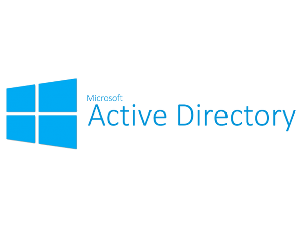
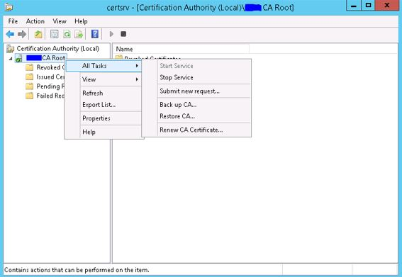

Active Directory Certificate Services
Active Directory Certificate Services (AD CS) is a role in Windows Server which allows you to fully implement a PKI infrastructure. AD CS also provides templates and web services for issuance and management of certificates. In this guide we will cover basic concepts of AD CS and provide a method for migration of this service to another windows server .
This won’t be an in depth guide because you can find the information you need in official Microsoft books, Microsoft TechNet website or other blogs. I will start with an introduction and then explain the whole migration process, because a complete working walkthrough was missing when I originally wanted to perform the migration.
According to official docs, AD CS is capable of:
- Certification authorities (CAs). Root and subordinate CAs are used to issue certificates to users, computers, and services, and to manage certificate validity.
- Web enrollment. Web enrollment allows users to connect to a CA by means of a Web browser in order to request certificates and retrieve certificate revocation lists (CRLs).
- Online Responder. The Online Responder service decodes revocation status requests for specific certificates, evaluates the status of these certificates, and sends back a signed response containing the requested certificate status information.
- Network Device Enrollment Service. The Network Device Enrollment Service allows routers and other network devices that do not have domain accounts to obtain certificates.
It’s noteworthy that the true power of AD CS lies in the automation made possible by extensive powershell cmdlets, “Certificate Templates” and deep integration with AD DS which lets you build complex PKI infrastructure scenarios easily and securely.
AD CS can be installed in two mode:
- Enterprise CA
- Standalone CA
Enterprise CA needs a domain to be present. the server on which AD CS is installed will be registered to the domain as PKI provider (that’s why AD CS deployment in Enterprise mode needs Enterprise Admin rights on the domain). This mode enables all the fancy automation stuff and deep integration into windows and Active Directory by means of GPOs or AD CS RPC.
Standalone CA is exactly what the name implies. It does not need AD DS and works on an standalone windows server perfectly. This mode is best used to issue certificates for websites or VPNs…
Final Notes
- IIS is installed on the server if you want to publish CRLs (sure you want that in production :) ). However you can specify a network path and have another webserver on the target share (even something like nginx).
- Network Device Enrollment Services (NDES) can work with Cisco Simple Certificate Enrollment Protocol (SCEP) and issue certificates to network devices (routers, firewalls, etc). These certificates are usually used for VPN. the CA is imported into trusted CA Certificate store in windows computers on the domain automatically, enabling users to connect to corporate VPNs easily and securely. Even client certificate can be issued automatically and installed on workstations so there will be no need of user/pass for VPN, increasing security and user-friendliness.
- Smartcards can also be leveraged in an AD CS environment. User logon information, as well as certificates installed from a CA server, can be placed on a smart card. When a user needs to log on to a system, he places the smart card in a smart card reader or simply swipes it across the reader itself. The certificate is read, and the user is prompted only for a PIN, which is uniquely assigned to each user. After the PIN and the certificate are verified, the user is logged on to the domain.
- Encrypted File System (EFS) keys can also be integrated in CA and deployed domain-wide, making encryption and decryption secure and painless.
- For a guide about basic installation of AD CS and creating a template you can refer to this guide [Virtually boring] , I won’t be explaining it here again because you can easily find information about the basics of AD CS on the internet.
Active Directory Certificate Services Migration
This method was used to migrate a Windows server 2003 AD CS installation to Windows Server 2012 R2. Note that migration from Windows server 2003 to 2012 is not officially supported by Microsoft and therefore is the trickiest and the most problematic. So this guide will likely work on other versions too.
- Open AD CS management panel (Certificate Authority) and Backup CA by right-clicking the main entry on the tree-view.

1
2. Export the following registry key:
1
HKLM\System\CurrentControlSet\Services\CertSvc\Configuration
- you can use this command :
1
reg export "HKLM\System\CurrentControlSet\Services\CertSvc\Configuration" c:\cabackupregistry.reg /y
- Remove AD CS Role from the original server (Windows Server 2003 here)
- Install AD CS Role on the destination server (Windows Server 2012 R2 here)
- note that it should have already be joined to the domain.
- During installation be careful to choose the option Existing Key and supply the backup files from step 1.
- Open Certificate Authority on destination server and choose Restore CA. (It’s right next to where you chose Backup CA in step 1) this will restore already issued or revoked certificate database and logs.
- Import the registry key you exported on original server to destination server. (move with USB flash drive or network share, then double click to install)
- Restart AD CS (reboot the server or Stop Service / Start Service on the right click menu on Certificate Authority tree-view).
Now you should have successfully migrated AD CS and all your older certificates should be valid too. I advice you to test the CA by issuing a certificate from a template now that migration is finished.
Comments powered by Disqus.